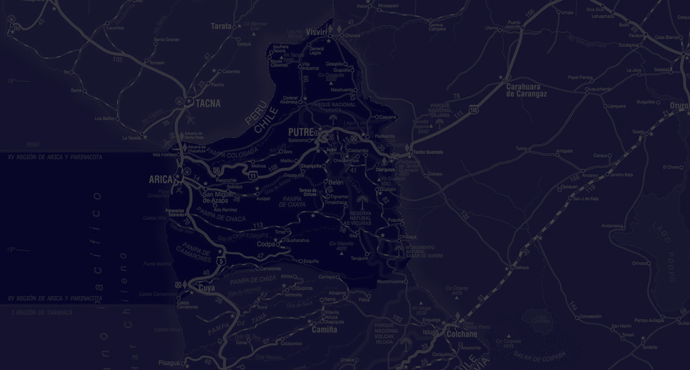
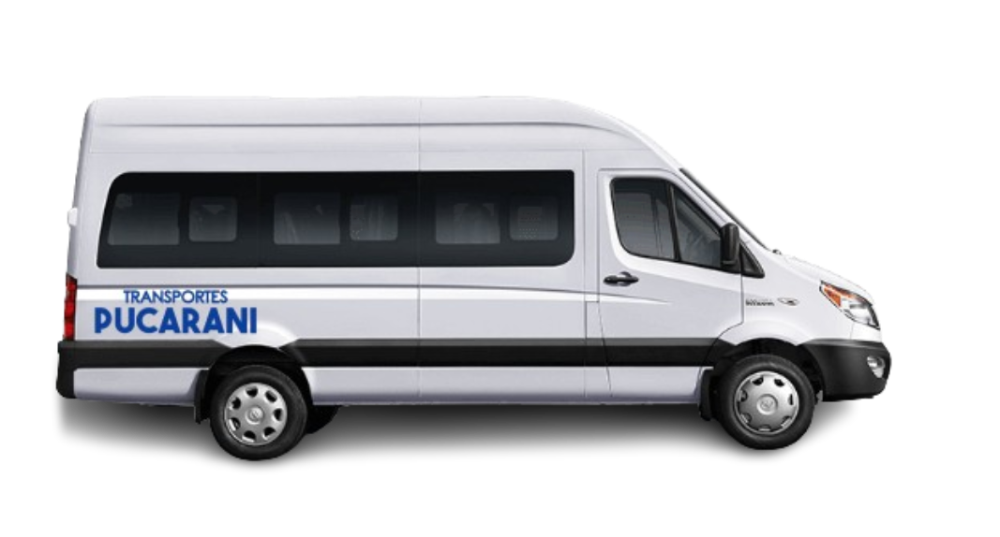
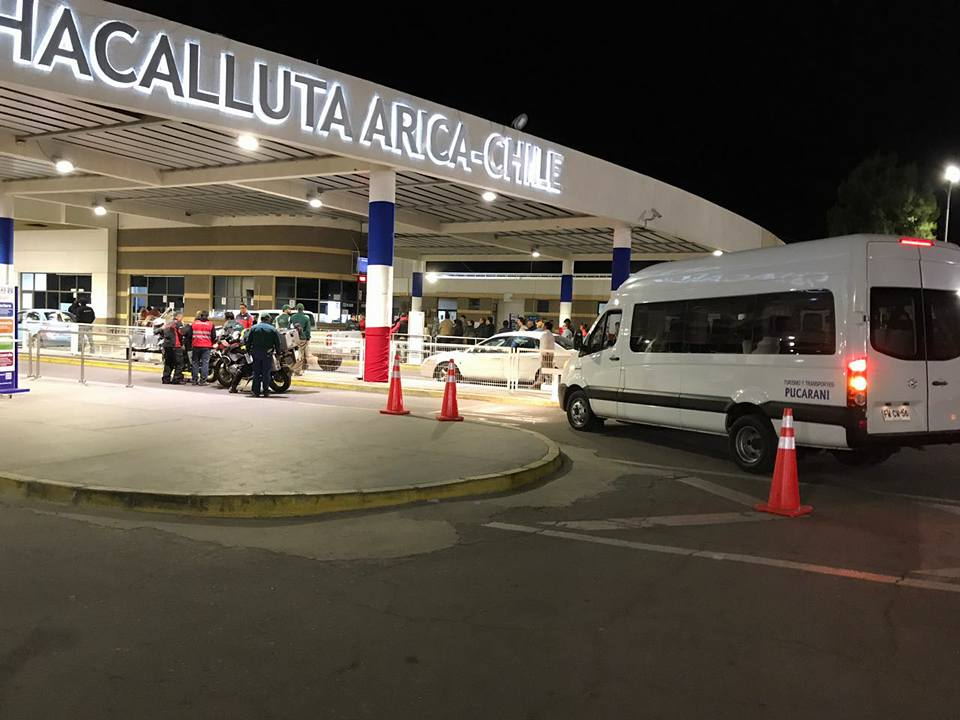
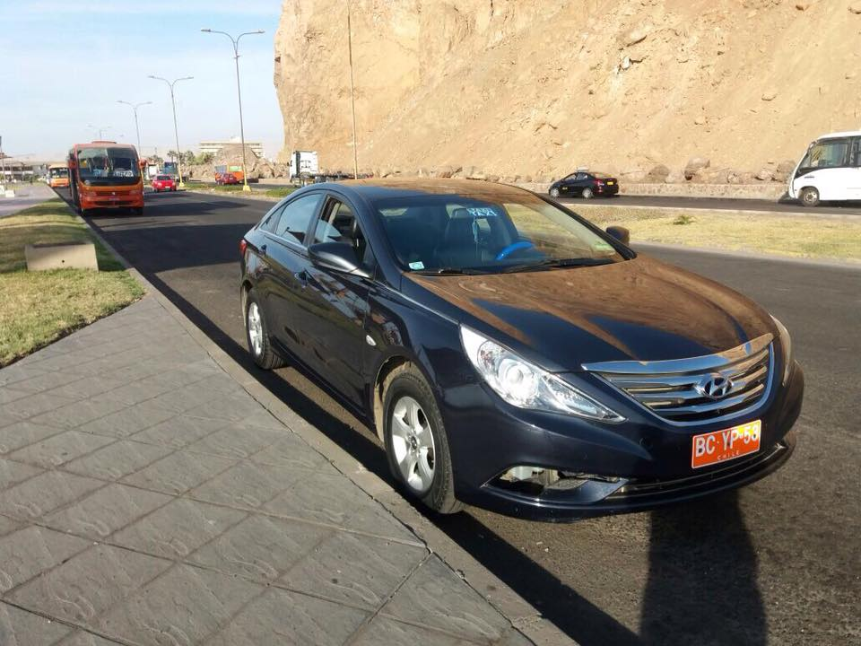
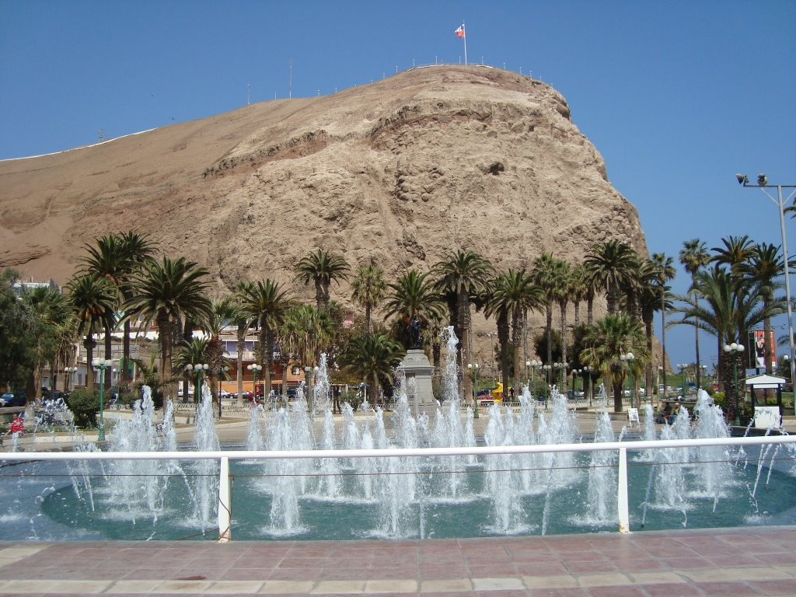
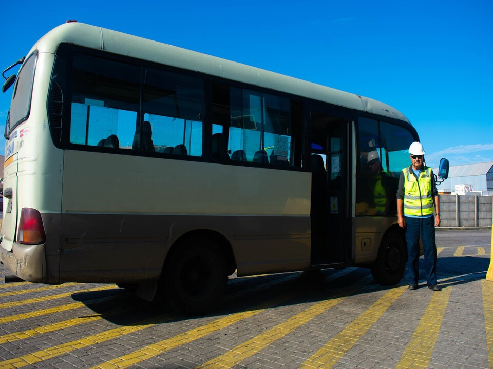
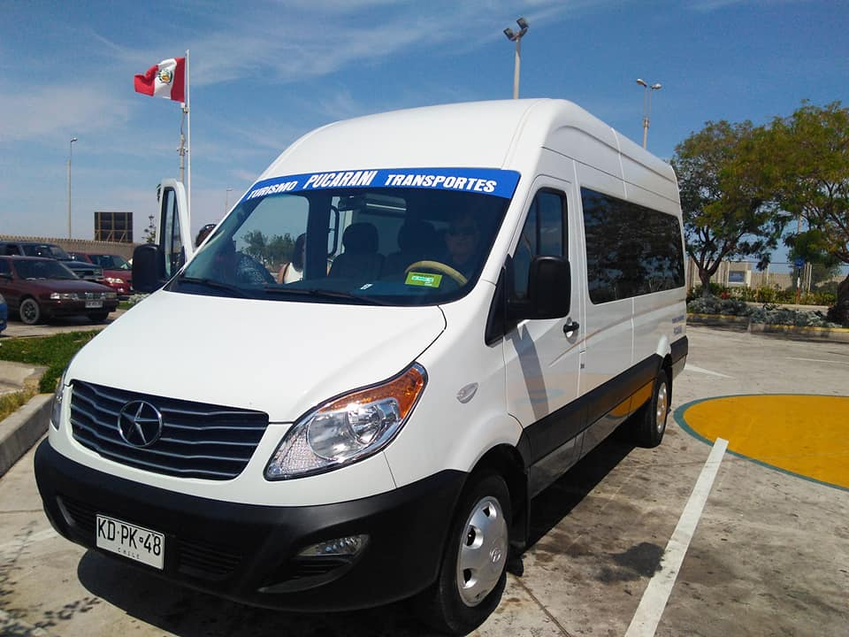
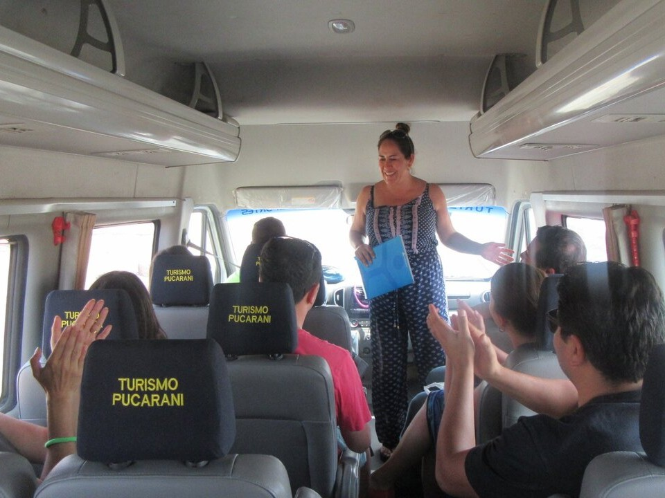

Los que se comprometen con tu traslado
Transportes Pucarani es la empresa líder en traslados de la Región de Arica y Parinacota. Servicio profesional, puntual y confiable para particulares y empresas.
Clientes
Viajes
Vehículos
Trabajadores


Quiénes Somos
Somos una empresa de transporte con años de experiencia en la Región de Arica y Parinacota. Nuestro compromiso es ofrecer un servicio seguro, puntual y de calidad que supere las expectativas de cada cliente, ya sea para traslados personales, corporativos o turísticos.
-
Puntualidad garantizada
Sabemos que tu tiempo es valioso. Nuestros conductores llegan a tiempo para que no pierdas ningún vuelo ni compromiso.
-
Seguridad en cada viaje
Todos nuestros vehículos cuentan con revisión técnica al día y nuestros conductores están debidamente certificados y capacitados.
-
Atención personalizada
Te atendemos por WhatsApp, teléfono o correo. Adaptamos nuestros servicios a tus necesidades y horarios sin complicaciones.
Nuestros Servicios
Soluciones de transporte para todas tus necesidades en Arica, Parinacota y Tacna.

Aeropuerto
Traslados al Aeropuerto Internacional Chacalluta (Arica) y al Aeropuerto Internacional Carlos Ciriani (Tacna). Monitoreamos tu vuelo para ajustar el horario de recogida.

Taxi Ejecutivo
Servicio de taxi privado para ejecutivos y particulares. Vehículos cómodos, conductor profesional y puntualidad garantizada para tus reuniones y compromisos de negocios.

City Tour
Descubre Arica con nuestros recorridos guiados: el Morro de Arica, la Catedral de San Marcos, el Valle de Azapa y los principales atractivos de la ciudad.

Puerto
Traslados al Puerto de Arica para pasajeros de cruceros y trabajadores portuarios. Servicio coordinado con los horarios de embarque y desembarque.

Turismo
Excursiones a Putre, el Parque Nacional Lauca, el Lago Chungará, las Termas de Jurasi y otros destinos únicos del altiplano ariqueño. Vive la región al máximo.

Servicios Especiales
Traslados para eventos corporativos, matrimonios, graduaciones y contratos de empresa. Vans y minibuses disponibles para grupos de cualquier tamaño.
¿Por qué elegirnos?
Confianza, seguridad y profesionalismo en cada kilómetro.
Conductores certificados y con experiencia
Tu seguridad y comodidad son nuestra prioridad número uno en cada trayecto.
- Licencias y habilitaciones al día en todo momento.
- Capacitación continua en atención al cliente y conducción segura.
- Conocimiento profundo de las rutas de Arica y toda la región.

Flota moderna y bien mantenida
Viaja con la tranquilidad de saber que el vehículo que te transporta está en óptimas condiciones.
Nuestros vehículos pasan revisiones técnicas periódicas y cuentan con aire acondicionado y cinturones de seguridad. Sedanes ejecutivos para parejas, vans para grupos y minibuses para eventos.
Disponibilidad las 24 horas, los 7 días
Vuelos de madrugada, reuniones urgentes o traslados en feriados: estamos disponibles cuando tú nos necesitas, sin excepciones.
- Servicio de traslados nocturnos sin recargo especial.
- Atención inmediata por WhatsApp y teléfono.
- Monitoreo de vuelos para ajustar la hora de recogida.

Cobertura en toda la región y Tacna
Operamos en toda la Región de Arica y Parinacota y cruzamos la frontera hasta Tacna, Perú.
Desde la costa hasta el altiplano, llevamos a nuestros pasajeros a cualquier destino de la región con la misma calidad y compromiso de siempre.

Rodrigo Tapia
Empresario, Arica
Uso Transportes Pucarani para todos mis traslados al aeropuerto. Siempre puntuales, los vehículos están impecables y la comunicación por WhatsApp es inmediata. Totalmente recomendado para ejecutivos.

Valentina Morales
Turista, Santiago
Contratamos el city tour y la excursión al Lago Chungará. El conductor conocía cada rincón de la región y fue un excelente guía. Una experiencia que no olvidaremos. ¡Volveremos sin dudas!

Marco Quispe
Ingeniero, Iquique
Viajo frecuentemente a Arica por trabajo. Pucarani me lleva y trae del aeropuerto sin fallas. Reservar por WhatsApp es muy fácil, la respuesta es inmediata y el precio es muy conveniente.

Camila Flores
Pasajera de crucero
El crucero llegó temprano en la mañana y Pucarani estaba en el puerto esperándonos. Hicieron el city tour completo y nos devolvieron justo a tiempo. Servicio perfecto de principio a fin.

Diego Fernández
Organizador de eventos, Arica
Para nuestra convención anual de más de 80 personas, Pucarani coordinó todos los traslados perfectamente, en tiempo y con una actitud impecable. Los seguiremos contratando sin pensarlo.
Preguntas Frecuentes
¿Tienes dudas? Aquí respondemos las consultas más comunes de nuestros clientes.
¿Cómo puedo reservar un servicio?
La forma más rápida es escribirnos por WhatsApp. También puedes llamarnos directamente. Confirmamos tu reserva de inmediato y te enviamos todos los detalles del traslado.
¿Con cuánto tiempo de anticipación debo reservar?
Recomendamos reservar con al menos 24 horas de anticipación para garantizar disponibilidad. Para eventos o grupos grandes, contáctanos con varios días de antelación. En casos urgentes, consúltanos igualmente: hacemos lo posible por atenderte.
¿Realizan traslados a Tacna, Perú?
Sí. Realizamos traslados al Aeropuerto Internacional Coronel FAP Carlos Ciriani Santa Rosa de Tacna y a otros puntos de la ciudad. El cruce fronterizo se coordina con anticipación para evitar demoras.
¿Atienden los fines de semana y feriados?
Sí, operamos los 7 días de la semana, incluidos feriados y días festivos. Los vuelos y compromisos no se detienen, por eso nosotros tampoco lo hacemos.
¿Qué tipo de vehículos tienen?
Contamos con sedanes ejecutivos para traslados individuales y de pareja, vans para grupos medianos, y minibuses para grupos grandes o eventos corporativos. Todos los vehículos son modernos, con aire acondicionado y mantenimiento periódico.
¿Listo para reservar tu traslado?
Escríbenos ahora por WhatsApp y cotiza tu servicio en minutos.
Atención inmediata, sin esperas, los 7 días de la semana.
También puedes llamarnos: +56 9 XXXX XXXX